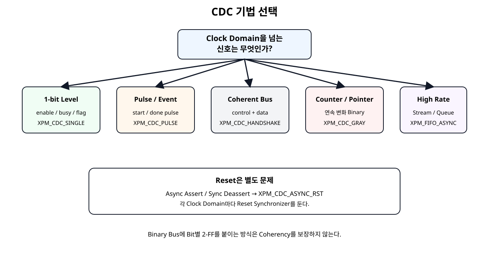
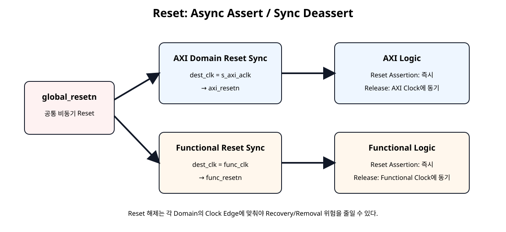
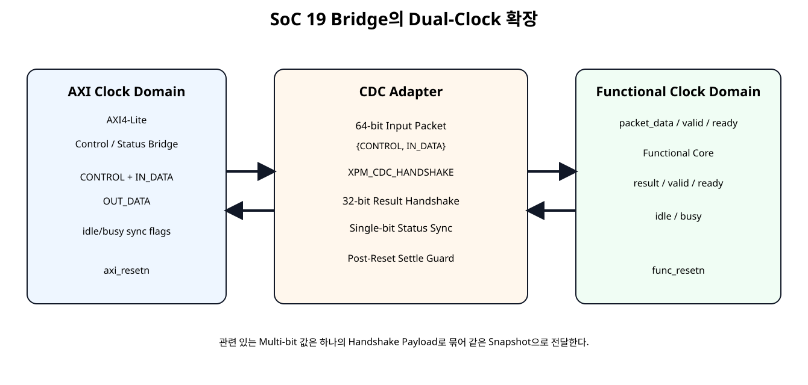
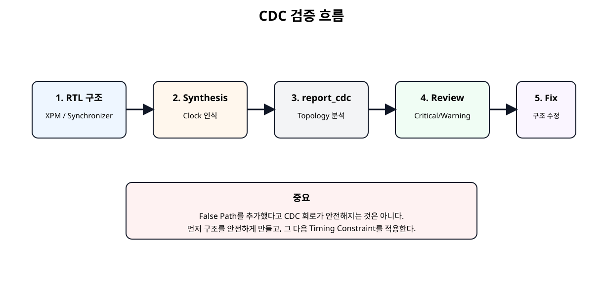

전체 학습 위치
이번 장의 목표
CDC 문제를 “Timing Constraint 하나 추가”로 처리하지 않고, 먼저 Hardware 구조를 안전하게 만든 뒤 Vivado 구조 분석으로 확인한다.
CDC가 필요한 경우와 필요하지 않은 경우
| 상황 | 판단 |
|---|---|
| 서로 무관한 두 Oscillator | Asynchronous CDC 필요 |
| 외부 Sensor/Recovered Clock | Asynchronous CDC 필요 |
| PLL/MMCM Generated Clock이며 관계를 Timing Engine이 정확히 앎 | 항상 CDC라고 단정하지 않고 Timing 관계를 먼저 확인 |
| 같은 Clock + Clock Enable | Clock Domain이 하나이므로 CDC 없음 |
| Logic으로 만든 분주 Clock | 새 Clock Domain과 Routing 문제를 만들 수 있어 지양 |
Metastability
Asynchronous Signal이 Destination Flip-Flop의 Setup/Hold Window 근처에서 바뀌면 출력이 즉시 0 또는 1로 결정되지 않는 Metastability(메타안정성) 상태가 발생할 수 있다.
2-FF는 Metastability 자체를 없애는 것이 아니라 다음 Logic까지 전파될 확률을 매우 낮추는 구조다.
CDC 기법 선택표

원본 보기 ↗
1-bit Level · 2-FF
Enable, Busy, Alarm처럼 충분히 오래 유지되는 단일 Level Signal은 Destination Clock의 2단 이상 Synchronizer가 기본이다.
module cdc_level_sync_educational #(
parameter integer STAGES = 2
)(
input wire dest_clk,
input wire async_level_i,
output wire sync_level_o
);
// Educational implementation of a single-bit level synchronizer.
// For AMD FPGA production designs, prefer XPM_CDC_SINGLE.
//
// Do not use this structure independently on each bit of a coherent bus.
(* ASYNC_REG = "TRUE" *)
(* SHREG_EXTRACT = "NO" *)
reg [STAGES-1:0] sync_ff = {STAGES{1'b0}};
integer i;
always @(posedge dest_clk) begin
sync_ff[0] <= async_level_i;
for (i = 1; i < STAGES; i = i + 1) begin
sync_ff[i] <= sync_ff[i-1];
end
end
assign sync_level_o = sync_ff[STAGES-1];
endmodule
AMD XPM_CDC_SINGLE
module xpm_single_bit_sync #(
parameter integer DEST_SYNC_FF = 4
)(
input wire src_clk,
input wire src_level_i,
input wire dest_clk,
output wire dest_level_o
);
// Use only for a single level signal or for independent status bits.
// Do not synchronize a coherent binary bus by instantiating one per bit.
xpm_cdc_single #(
.DEST_SYNC_FF(DEST_SYNC_FF),
.INIT_SYNC_FF(0),
.SIM_ASSERT_CHK(1),
.SRC_INPUT_REG(1)
) u_xpm_cdc_single (
.src_clk(src_clk),
.src_in(src_level_i),
.dest_clk(dest_clk),
.dest_out(dest_level_o)
);
endmodule
DEST_SYNC_FF는 2~10 Stage를 지원하며, Source Input Register와 Simulation Misuse Check를 설정할 수 있다.
왜 Multi-bit에 Bit별 2-FF가 안 되는가
따라서 서로 관계가 있는 Binary Bus는 Bit별 Synchronizer로 Coherency를 보장할 수 없다. 독립 Flag 배열만 예외다.
Pulse CDC
Source Clock의 1-Clock Pulse는 Destination Clock이 느리면 아예 보지 못할 수 있다. 교육용 Toggle 방식은 Pulse를 상태 변화로 바꾸고 Destination에서 XOR로 다시 1-Clock Pulse를 만든다.
module cdc_pulse_toggle_educational (
input wire src_clk,
input wire src_resetn,
input wire src_pulse_i,
input wire dest_clk,
input wire dest_resetn,
output wire dest_pulse_o
);
// Educational pulse CDC using a toggle synchronizer.
// The source pulse rate must be slow enough that each toggle can be observed
// by the destination domain.
//
// For AMD FPGA production designs, prefer XPM_CDC_PULSE.
reg src_toggle;
(* ASYNC_REG = "TRUE" *)
(* SHREG_EXTRACT = "NO" *)
reg [1:0] dest_toggle_sync;
reg dest_toggle_d;
always @(posedge src_clk) begin
if (!src_resetn) begin
src_toggle <= 1'b0;
end else if (src_pulse_i) begin
src_toggle <= ~src_toggle;
end
end
always @(posedge dest_clk) begin
if (!dest_resetn) begin
dest_toggle_sync <= 2'b00;
dest_toggle_d <= 1'b0;
end else begin
dest_toggle_sync[0] <= src_toggle;
dest_toggle_sync[1] <= dest_toggle_sync[0];
dest_toggle_d <= dest_toggle_sync[1];
end
end
assign dest_pulse_o =
dest_toggle_sync[1] ^ dest_toggle_d;
endmodule
XPM_CDC_PULSE의 간격 조건
module xpm_pulse_sync (
input wire src_clk,
input wire src_reset,
input wire src_pulse_i,
input wire dest_clk,
input wire dest_reset,
output wire dest_pulse_o
);
// XPM_CDC_PULSE converts a source-domain pulse to one destination-clock pulse.
// The source must obey AMD's minimum pulse-gap requirement.
xpm_cdc_pulse #(
.DEST_SYNC_FF(4),
.INIT_SYNC_FF(0),
.REG_OUTPUT(1),
.RST_USED(1),
.SIM_ASSERT_CHK(1)
) u_xpm_cdc_pulse (
.src_clk(src_clk),
.src_pulse(src_pulse_i),
.src_rst(src_reset),
.dest_clk(dest_clk),
.dest_pulse(dest_pulse_o),
.dest_rst(dest_reset)
);
endmodule
AMD XPM_CDC_PULSE는 Destination에서 1 Clock Pulse를 생성하지만 Source Pulse 사이에는 최소 간격 조건이 있다. Event Rate가 그보다 빠르면 Pulse CDC가 아니라 Handshake/FIFO 구조를 사용한다.
Coherent Multi-bit Bus
Control Word와 Data Word처럼 서로 같은 Transaction에 속하는 값은 하나의 Snapshot으로 전달해야 한다.
XPM_CDC_HANDSHAKE
Full Handshake는 Source가 Data를 안정적으로 유지하고, Destination의 수신 확인이 Source로 돌아온 뒤 다음 Transfer를 허용한다.
READY/VALID CDC Wrapper
module xpm_ready_valid_bus_bridge #(
parameter integer WIDTH = 32,
parameter integer SETTLE_CYCLES = 8
)(
// Source clock domain
input wire src_clk,
input wire src_resetn,
input wire [WIDTH-1:0] src_data_i,
input wire src_valid_i,
output wire src_ready_o,
// Destination clock domain
input wire dest_clk,
input wire dest_resetn,
output wire [WIDTH-1:0] dest_data_o,
output wire dest_valid_o,
input wire dest_ready_i
);
// Ready/Valid wrapper around XPM_CDC_HANDSHAKE.
//
// One transfer can be outstanding.
// A new source word is accepted only after the full previous handshake
// returns to idle.
localparam [1:0] SRC_IDLE = 2'd0;
localparam [1:0] SRC_WAIT_RCV_HIGH = 2'd1;
localparam [1:0] SRC_WAIT_RCV_LOW = 2'd2;
reg [1:0] src_state;
reg [WIDTH-1:0] src_data_hold;
reg src_send;
wire src_rcv;
wire [WIDTH-1:0] dest_out;
wire dest_req;
reg dest_ack;
// Post-reset guard lets the unreset XPM handshake synchronizers
// observe stable zero values before new traffic is accepted.
reg [7:0] src_settle_count;
reg [7:0] dest_settle_count;
wire src_active;
wire dest_active;
assign src_active =
(src_settle_count >= SETTLE_CYCLES);
assign dest_active =
(dest_settle_count >= SETTLE_CYCLES);
assign src_ready_o =
src_active &&
(src_state == SRC_IDLE);
assign dest_data_o = dest_out;
assign dest_valid_o =
dest_active &&
dest_req &&
!dest_ack;
always @(posedge src_clk) begin
if (!src_resetn) begin
src_state <= SRC_IDLE;
src_data_hold <= {WIDTH{1'b0}};
src_send <= 1'b0;
src_settle_count <= 8'd0;
end else begin
if (!src_active) begin
src_settle_count <= src_settle_count + 1'b1;
end
case (src_state)
SRC_IDLE: begin
src_send <= 1'b0;
if (src_active && src_valid_i) begin
src_data_hold <= src_data_i;
src_send <= 1'b1;
src_state <= SRC_WAIT_RCV_HIGH;
end
end
SRC_WAIT_RCV_HIGH: begin
if (src_rcv) begin
src_send <= 1'b0;
src_state <= SRC_WAIT_RCV_LOW;
end
end
SRC_WAIT_RCV_LOW: begin
if (!src_rcv) begin
src_state <= SRC_IDLE;
end
end
default: begin
src_state <= SRC_IDLE;
src_send <= 1'b0;
end
endcase
end
end
always @(posedge dest_clk) begin
if (!dest_resetn) begin
dest_ack <= 1'b0;
dest_settle_count <= 8'd0;
end else begin
if (!dest_active) begin
dest_settle_count <= dest_settle_count + 1'b1;
dest_ack <= 1'b0;
end else if (!dest_ack && dest_req && dest_ready_i) begin
dest_ack <= 1'b1;
end else if (dest_ack && !dest_req) begin
dest_ack <= 1'b0;
end
end
end
xpm_cdc_handshake #(
.DEST_EXT_HSK(1),
.DEST_SYNC_FF(4),
.INIT_SYNC_FF(0),
.SIM_ASSERT_CHK(1),
.SRC_SYNC_FF(4),
.WIDTH(WIDTH)
) u_xpm_cdc_handshake (
.src_clk(src_clk),
.src_in(src_data_hold),
.src_send(src_send),
.src_rcv(src_rcv),
.dest_clk(dest_clk),
.dest_out(dest_out),
.dest_req(dest_req),
.dest_ack(dest_ack)
);
endmodule
SoC 19의 READY/VALID Interface와 XPM_CDC_HANDSHAKE의 Full Handshake Sequence를 연결한다. 한 번에 한 Transfer만 Outstanding 상태로 유지한다.
Continuous Data와 Async FIFO
| Data 특성 | 권장 |
|---|---|
| 간헐적 1 Word Command/Result | XPM_CDC_HANDSHAKE |
| 몇 Word를 낮은 빈도로 전송 | Handshake 또는 작은 Mailbox |
| 연속 Sample/Tensor/Packet | XPM_FIFO_ASYNC / XPM_FIFO_AXIS |
| FIFO Pointer | Gray Encoding |
NPU Tensor나 FFT Sample을 1 Word Handshake로 계속 보내는 것은 Throughput을 크게 떨어뜨린다.
Reset도 CDC다
Reset의 Assertion은 즉시 필요할 수 있지만 Deassertion이 Clock Edge와 무관하게 발생하면 Recovery/Removal 문제를 만들 수 있다. 따라서 Clock Domain마다 Reset 해제를 Synchronize한다.
Async Assert / Sync Deassert

원본 보기 ↗
교육용 RTL
module reset_sync_async_assert_educational #(
parameter integer STAGES = 2
)(
input wire clk,
input wire arstn_i,
output wire srstn_o
);
// Active-Low reset synchronizer.
// Assertion: asynchronous
// Deassertion: synchronous to clk
//
// For AMD FPGA production designs, prefer XPM_CDC_ASYNC_RST.
(* ASYNC_REG = "TRUE" *)
(* SHREG_EXTRACT = "NO" *)
reg [STAGES-1:0] reset_ff;
integer i;
always @(posedge clk or negedge arstn_i) begin
if (!arstn_i) begin
reset_ff <= {STAGES{1'b0}};
end else begin
reset_ff[0] <= 1'b1;
for (i = 1; i < STAGES; i = i + 1) begin
reset_ff[i] <= reset_ff[i-1];
end
end
end
assign srstn_o = reset_ff[STAGES-1];
endmodule
AMD XPM
module xpm_reset_sync_active_low #(
parameter integer DEST_SYNC_FF = 4
)(
input wire dest_clk,
input wire global_resetn_i,
output wire dest_resetn_o
);
// AMD XPM implementation.
// Active-Low reset asserts asynchronously and deasserts synchronously
// to the destination clock.
xpm_cdc_async_rst #(
.DEST_SYNC_FF(DEST_SYNC_FF),
.INIT_SYNC_FF(0),
.RST_ACTIVE_HIGH(0)
) u_xpm_cdc_async_rst (
.src_arst(global_resetn_i),
.dest_clk(dest_clk),
.dest_arst(dest_resetn_o)
);
endmodule
Domain별 Reset 분리
global_resetn → Functional Reset Synchronizer → func_resetn
AXI Logic과 Functional Logic이 같은 Global Reset Input을 받더라도 Reset Release Clock은 서로 다르다.
Post-Reset Settle Guard
XPM_CDC_HANDSHAKE 내부 Synchronizer에는 별도의 Runtime Reset Port가 없으므로 Wrapper는 양 Domain Reset 해제 직후 즉시 Transfer를 받지 않고 SETTLE_CYCLES 동안 0 상태가 전파되도록 기다린다.
SoC 19 Dual-Clock 확장

원본 보기 ↗
CONTROL + DATA 64-bit Packet
CONTROL과 IN_DATA를 따로 Crossing하지 않는다.
이 구조로 같은 Transaction의 설정값과 Data가 서로 다른 시점으로 섞이는 것을 방지한다.
Result 32-bit Return
Functional Core의 32-bit 결과도 READY/VALID → XPM Full Handshake → AXI Domain READY/VALID로 되돌린다. AXI Domain의 SoC 19 Output Buffer가 결과를 Capture한 뒤 Software POP까지 유지한다.
Status Flag CDC
idle, busy처럼 각각 독립적인 1-bit Flag는 개별 XPM_CDC_SINGLE로 AXI Domain에 넘긴다.
CDC Adapter Module
module dual_clock_bridge_cdc_adapter (
// AXI/register clock domain
input wire axi_clk,
input wire axi_resetn,
input wire [31:0] control_axi_i,
input wire [31:0] in_data_axi_i,
input wire in_valid_axi_i,
output wire in_ready_axi_o,
output wire [31:0] out_data_axi_o,
output wire out_valid_axi_o,
input wire out_ready_axi_i,
output wire [31:0] status_axi_o,
// Functional clock domain
input wire func_clk,
input wire func_resetn,
output wire [63:0] packet_func_o,
output wire packet_valid_func_o,
input wire packet_ready_func_i,
input wire [31:0] result_func_i,
input wire result_valid_func_i,
output wire result_ready_func_o,
input wire func_idle_i,
input wire func_busy_i
);
// This module owns all CDC policy between the AXI and functional domains.
// Related CONTROL + IN_DATA values are packed and transferred coherently.
wire [63:0] packet_axi;
assign packet_axi = {
control_axi_i,
in_data_axi_i
};
xpm_ready_valid_bus_bridge #(
.WIDTH(64)
) u_input_packet_cdc (
.src_clk(axi_clk),
.src_resetn(axi_resetn),
.src_data_i(packet_axi),
.src_valid_i(in_valid_axi_i),
.src_ready_o(in_ready_axi_o),
.dest_clk(func_clk),
.dest_resetn(func_resetn),
.dest_data_o(packet_func_o),
.dest_valid_o(packet_valid_func_o),
.dest_ready_i(packet_ready_func_i)
);
xpm_ready_valid_bus_bridge #(
.WIDTH(32)
) u_output_result_cdc (
.src_clk(func_clk),
.src_resetn(func_resetn),
.src_data_i(result_func_i),
.src_valid_i(result_valid_func_i),
.src_ready_o(result_ready_func_o),
.dest_clk(axi_clk),
.dest_resetn(axi_resetn),
.dest_data_o(out_data_axi_o),
.dest_valid_o(out_valid_axi_o),
.dest_ready_i(out_ready_axi_i)
);
// These are independent one-bit status flags.
// They are intentionally not treated as a coherent binary bus.
wire func_idle_axi;
wire func_busy_axi;
xpm_single_bit_sync u_idle_status_cdc (
.src_clk(func_clk),
.src_level_i(func_idle_i),
.dest_clk(axi_clk),
.dest_level_o(func_idle_axi)
);
xpm_single_bit_sync u_busy_status_cdc (
.src_clk(func_clk),
.src_level_i(func_busy_i),
.dest_clk(axi_clk),
.dest_level_o(func_busy_axi)
);
assign status_axi_o = {
30'h0,
func_busy_axi,
func_idle_axi
};
endmodule
CDC Policy는 Top이 아니라 별도 Adapter Module에 집중시켰다.
순수 Top Wrapper
module dual_clock_control_status_bridge_demo #(
parameter integer C_S_AXI_ADDR_WIDTH = 32,
parameter integer PROCESS_CYCLES = 6
)(
input wire s_axi_aclk,
input wire func_clk,
input wire global_resetn,
input wire [C_S_AXI_ADDR_WIDTH-1:0] s_axi_awaddr,
input wire [2:0] s_axi_awprot,
input wire s_axi_awvalid,
output wire s_axi_awready,
input wire [31:0] s_axi_wdata,
input wire [3:0] s_axi_wstrb,
input wire s_axi_wvalid,
output wire s_axi_wready,
output wire [1:0] s_axi_bresp,
output wire s_axi_bvalid,
input wire s_axi_bready,
input wire [C_S_AXI_ADDR_WIDTH-1:0] s_axi_araddr,
input wire [2:0] s_axi_arprot,
input wire s_axi_arvalid,
output wire s_axi_arready,
output wire [31:0] s_axi_rdata,
output wire [1:0] s_axi_rresp,
output wire s_axi_rvalid,
input wire s_axi_rready,
output wire irq_o
);
// Pure Shell / Wrapper:
// - reset synchronization is delegated
// - CDC policy is delegated
// - functional processing is delegated
// - AXI/Register behavior is delegated
wire axi_resetn;
wire func_resetn;
wire [31:0] control_axi;
wire [31:0] status_axi;
wire [31:0] in_data_axi;
wire in_valid_axi;
wire in_ready_axi;
wire [31:0] out_data_axi;
wire out_valid_axi;
wire out_ready_axi;
wire [63:0] packet_func;
wire packet_valid_func;
wire packet_ready_func;
wire [31:0] result_func;
wire result_valid_func;
wire result_ready_func;
wire func_idle;
wire func_busy;
xpm_reset_sync_active_low u_axi_reset_sync (
.dest_clk(s_axi_aclk),
.global_resetn_i(global_resetn),
.dest_resetn_o(axi_resetn)
);
xpm_reset_sync_active_low u_func_reset_sync (
.dest_clk(func_clk),
.global_resetn_i(global_resetn),
.dest_resetn_o(func_resetn)
);
axi_control_status_bridge_ip #(
.C_S_AXI_ADDR_WIDTH(C_S_AXI_ADDR_WIDTH)
) u_axi_control_status_bridge_ip (
.s_axi_aclk(s_axi_aclk),
.s_axi_aresetn(axi_resetn),
.s_axi_awaddr(s_axi_awaddr),
.s_axi_awprot(s_axi_awprot),
.s_axi_awvalid(s_axi_awvalid),
.s_axi_awready(s_axi_awready),
.s_axi_wdata(s_axi_wdata),
.s_axi_wstrb(s_axi_wstrb),
.s_axi_wvalid(s_axi_wvalid),
.s_axi_wready(s_axi_wready),
.s_axi_bresp(s_axi_bresp),
.s_axi_bvalid(s_axi_bvalid),
.s_axi_bready(s_axi_bready),
.s_axi_araddr(s_axi_araddr),
.s_axi_arprot(s_axi_arprot),
.s_axi_arvalid(s_axi_arvalid),
.s_axi_arready(s_axi_arready),
.s_axi_rdata(s_axi_rdata),
.s_axi_rresp(s_axi_rresp),
.s_axi_rvalid(s_axi_rvalid),
.s_axi_rready(s_axi_rready),
.control_o(control_axi),
.status_i(status_axi),
.in_data_o(in_data_axi),
.in_valid_o(in_valid_axi),
.in_ready_i(in_ready_axi),
.out_data_i(out_data_axi),
.out_valid_i(out_valid_axi),
.out_ready_o(out_ready_axi),
.irq_o(irq_o)
);
dual_clock_bridge_cdc_adapter u_dual_clock_bridge_cdc_adapter (
.axi_clk(s_axi_aclk),
.axi_resetn(axi_resetn),
.control_axi_i(control_axi),
.in_data_axi_i(in_data_axi),
.in_valid_axi_i(in_valid_axi),
.in_ready_axi_o(in_ready_axi),
.out_data_axi_o(out_data_axi),
.out_valid_axi_o(out_valid_axi),
.out_ready_axi_i(out_ready_axi),
.status_axi_o(status_axi),
.func_clk(func_clk),
.func_resetn(func_resetn),
.packet_func_o(packet_func),
.packet_valid_func_o(packet_valid_func),
.packet_ready_func_i(packet_ready_func),
.result_func_i(result_func),
.result_valid_func_i(result_valid_func),
.result_ready_func_o(result_ready_func),
.func_idle_i(func_idle),
.func_busy_i(func_busy)
);
dual_clock_example_core #(
.PROCESS_CYCLES(PROCESS_CYCLES)
) u_dual_clock_example_core (
.clk(func_clk),
.resetn(func_resetn),
.packet_i(packet_func),
.packet_valid_i(packet_valid_func),
.packet_ready_o(packet_ready_func),
.result_o(result_func),
.result_valid_o(result_valid_func),
.result_ready_i(result_ready_func),
.idle_o(func_idle),
.busy_o(func_busy)
);
endmodule
Top은 Reset Synchronizer, AXI Bridge, CDC Adapter, Functional Core를 연결할 뿐 CDC 정책이나 기능 연산을 직접 수행하지 않는다.
Functional Core
module dual_clock_example_core #(
parameter integer PROCESS_CYCLES = 6
)(
input wire clk,
input wire resetn,
// Coherent input packet: control + data
input wire [63:0] packet_i,
input wire packet_valid_i,
output wire packet_ready_o,
output reg [31:0] result_o,
output reg result_valid_o,
input wire result_ready_i,
output wire idle_o,
output wire busy_o
);
localparam [1:0] ST_IDLE = 2'd0;
localparam [1:0] ST_RUN = 2'd1;
localparam [1:0] ST_OUT = 2'd2;
reg [1:0] state;
reg [7:0] cycles_left;
reg [31:0] data_latched;
reg [1:0] mode_latched;
wire [31:0] control_word;
wire [31:0] input_word;
assign control_word = packet_i[63:32];
assign input_word = packet_i[31:0];
assign packet_ready_o = (state == ST_IDLE);
assign idle_o = (state == ST_IDLE);
assign busy_o = (state == ST_RUN);
function [31:0] process_value;
input [31:0] value;
input [1:0] mode;
begin
case (mode)
2'b00: process_value = value;
2'b01: process_value = value + 32'd1;
2'b10: process_value = value << 1;
2'b11: process_value = ~value;
default: process_value = value;
endcase
end
endfunction
always @(posedge clk) begin
if (!resetn) begin
state <= ST_IDLE;
cycles_left <= 8'd0;
data_latched <= 32'h0000_0000;
mode_latched <= 2'b00;
result_o <= 32'h0000_0000;
result_valid_o <= 1'b0;
end else begin
case (state)
ST_IDLE: begin
result_valid_o <= 1'b0;
if (packet_valid_i && packet_ready_o) begin
data_latched <= input_word;
mode_latched <= control_word[1:0];
if (PROCESS_CYCLES <= 1) begin
cycles_left <= 8'd0;
end else begin
cycles_left <= PROCESS_CYCLES - 1;
end
state <= ST_RUN;
end
end
ST_RUN: begin
if (cycles_left != 0) begin
cycles_left <= cycles_left - 1'b1;
end else begin
result_o <= process_value(
data_latched,
mode_latched
);
result_valid_o <= 1'b1;
state <= ST_OUT;
end
end
ST_OUT: begin
if (result_valid_o && result_ready_i) begin
result_valid_o <= 1'b0;
state <= ST_IDLE;
end
end
default: begin
state <= ST_IDLE;
result_valid_o <= 1'b0;
end
endcase
end
end
endmodule
Functional Core는 AXI를 모르며 64-bit Packet과 READY/VALID Result만 사용한다.
Dual-Clock Testbench
AXI Clock은 100 MHz, Functional Clock은 약 71.4 MHz로 두어 서로 일정 배수 관계가 아닌 Clock을 사용한다.
`timescale 1ns / 1ps
module tb_dual_clock_control_status_bridge_demo;
localparam integer ADDR_W = 32;
reg axi_clk = 1'b0;
reg func_clk = 1'b0;
reg global_resetn = 1'b0;
always #5 axi_clk = ~axi_clk; // 100 MHz
always #7 func_clk = ~func_clk; // ~71.4 MHz
reg [ADDR_W-1:0] awaddr = 0;
reg [2:0] awprot = 0;
reg awvalid = 0;
wire awready;
reg [31:0] wdata = 0;
reg [3:0] wstrb = 0;
reg wvalid = 0;
wire wready;
wire [1:0] bresp;
wire bvalid;
reg bready = 0;
reg [ADDR_W-1:0] araddr = 0;
reg [2:0] arprot = 0;
reg arvalid = 0;
wire arready;
wire [31:0] rdata;
wire [1:0] rresp;
wire rvalid;
reg rready = 0;
wire irq_o;
integer errors = 0;
integer k;
reg [31:0] rd;
dual_clock_control_status_bridge_demo #(
.C_S_AXI_ADDR_WIDTH(ADDR_W),
.PROCESS_CYCLES(6)
) dut (
.s_axi_aclk(axi_clk),
.func_clk(func_clk),
.global_resetn(global_resetn),
.s_axi_awaddr(awaddr),
.s_axi_awprot(awprot),
.s_axi_awvalid(awvalid),
.s_axi_awready(awready),
.s_axi_wdata(wdata),
.s_axi_wstrb(wstrb),
.s_axi_wvalid(wvalid),
.s_axi_wready(wready),
.s_axi_bresp(bresp),
.s_axi_bvalid(bvalid),
.s_axi_bready(bready),
.s_axi_araddr(araddr),
.s_axi_arprot(arprot),
.s_axi_arvalid(arvalid),
.s_axi_arready(arready),
.s_axi_rdata(rdata),
.s_axi_rresp(rresp),
.s_axi_rvalid(rvalid),
.s_axi_rready(rready),
.irq_o(irq_o)
);
task automatic axi_write;
input [31:0] addr;
input [31:0] data;
begin
@(negedge axi_clk);
awaddr = addr;
awvalid = 1'b1;
wait (awready === 1'b1);
@(negedge axi_clk);
awvalid = 1'b0;
@(negedge axi_clk);
wdata = data;
wstrb = 4'b1111;
wvalid = 1'b1;
wait (wready === 1'b1);
@(negedge axi_clk);
wvalid = 1'b0;
bready = 1'b1;
wait (bvalid === 1'b1);
@(posedge axi_clk);
@(negedge axi_clk);
bready = 1'b0;
end
endtask
task automatic axi_read;
input [31:0] addr;
output [31:0] data;
begin
@(negedge axi_clk);
araddr = addr;
arvalid = 1'b1;
wait (arready === 1'b1);
@(negedge axi_clk);
arvalid = 1'b0;
rready = 1'b1;
wait (rvalid === 1'b1);
data = rdata;
@(posedge axi_clk);
@(negedge axi_clk);
rready = 1'b0;
end
endtask
task automatic wait_output;
begin
rd = 32'h0;
for (k = 0; k < 200; k = k + 1) begin
axi_read(32'h00000008, rd);
if (rd[2]) begin
k = 200;
end
end
if (!rd[2]) begin
$display("FAIL: timeout waiting for OUT_PENDING");
errors = errors + 1;
end
end
endtask
initial begin
#80;
global_resetn = 1'b1;
// Allow both domain reset synchronizers to release.
repeat (12) @(posedge axi_clk);
// Mode 1, input 9 => result 10.
axi_write(32'h00000000, 32'h00000001);
axi_write(32'h0000000C, 32'h00000009);
axi_write(32'h00000010, 32'h00000001);
wait_output();
axi_read(32'h00000014, rd);
if (rd !== 32'h0000000A) begin
$display("FAIL: dual-clock result=%08h expected=0000000A", rd);
errors = errors + 1;
end else begin
$display("PASS: dual-clock result 9 -> 10");
end
axi_write(32'h00000010, 32'h00000002);
if (errors == 0) begin
$display("SOC20 DUAL-CLOCK BRIDGE TEST: PASS");
end else begin
$display("SOC20 DUAL-CLOCK BRIDGE TEST: FAIL (%0d)", errors);
end
#100;
$finish;
end
endmodule
Vivado report_cdc

원본 보기 ↗
report_cdc -details -file soc20_report_cdc.rpt
report_clock_interaction -file soc20_clock_interaction.rptCDC Report에서 볼 항목
- Single-bit Synchronizer가 올바른 Topology로 인식되는가
- Asynchronous Reset Synchronizer가 인식되는가
- Combinational Logic before Synchronizer가 없는가
- Multi-clock Fanin이 없는가
- Unknown/Unsafe CDC가 남아 있지 않은가
- XPM_CDC_HANDSHAKE 경로의 Warning 의미를 이해하고 검토했는가
Constraint와 CDC 구조의 관계
Clock Enable과 Divided Clock
단순히 Logic을 느리게 동작시키기 위해 Counter Bit를 새 Clock으로 사용하면 새 Clock Domain과 Clock Routing 문제를 만든다.
권장: 하나의 Clock + clock_enable
실제 독립 Clock Domain이 필요한 경우에는 Clocking Resource와 CDC 구조를 명확히 설계한다.
NPU/FFT 확장
| 경로 | 권장 Interface |
|---|---|
| Mode / Start / Threshold | AXI4-Lite Control Register |
| Done / Error / Status | Single-bit CDC + Status Register 또는 Event |
| 짧은 Command / Result | Handshake CDC |
| ADC Sample / FFT Stream | Async FIFO / AXI4-Stream |
| NPU Tensor | AXI4-Stream + FIFO / DMA 방향 |
오류 점검
| 증상 | 원인 | 확인 |
|---|---|---|
| 가끔 Flag가 이상함 | Single-bit CDC 누락 | XPM_CDC_SINGLE |
| Binary 값이 간헐적으로 깨짐 | Bit별 2-FF | Handshake/Gray/FIFO |
| 짧은 Pulse가 사라짐 | Level Synchronizer 사용 | XPM_CDC_PULSE |
| Reset 해제 후 이상 동작 | 비동기 Deassert | Domain별 Reset Sync |
| Runtime Reset 직후 Handshake 꼬임 | Protocol 정착시간 없음 | Post-Reset Guard |
| report_cdc Critical Warning | 구조적으로 Unsafe CDC | Constraint보다 RTL 구조 먼저 수정 |
| FFT/NPU 속도가 너무 느림 | Word Handshake 남용 | Async FIFO / AXI4-Stream |
SoC 20 완료 체크리스트
- [ ] 1-bit Level, Pulse, Multi-bit Bus, Stream, Reset을 구분한다.
- [ ] 단일 Level에는 2-FF/XPM_CDC_SINGLE을 사용한다.
- [ ] Binary Multi-bit Bus에 Bit별 2-FF를 사용하지 않는다.
- [ ] Pulse에는 XPM_CDC_PULSE 또는 적절한 Event Handshake를 사용한다.
- [ ] 관련 Control/Data를 하나의 Handshake Packet으로 묶는다.
- [ ] 연속 고속 Data에는 Async FIFO/AXI4-Stream을 고려한다.
- [ ] Reset Assert와 Deassert 특성을 구분한다.
- [ ] 각 Clock Domain에 별도 Reset Synchronizer를 둔다.
- [ ] Runtime Reset 후 Protocol Settle Guard를 둔다.
- [ ] SoC 19 Bridge와 Functional Core 사이에 CDC Adapter를 분리했다.
- [ ] Top Wrapper에 기능/CDC 정책을 직접 넣지 않았다.
- [ ] 합성 후 report_cdc를 반드시 실행한다.
- [ ] False Path를 CDC 해결책으로 오해하지 않는다.
공식 매뉴얼 및 원본 근거
| 문서 | 확인 항목 |
|---|---|
| AMD UG953 · XPM_CDC_SINGLE · 2026.1 | 1-bit Synchronizer, DEST_SYNC_FF |
| AMD UG953 · XPM_CDC_ARRAY_SINGLE · 2026.1 | 서로 독립적인 Bit Array와 Coherent Bus의 차이 |
| AMD UG953 · XPM_CDC_PULSE · 2026.1 | Pulse Transfer와 Minimum Gap |
| AMD UG953 · XPM_CDC_ASYNC_RST · 2026.1 | Async Assert / Sync Deassert Reset |
| AMD UG949 · Clock Domain Crossing · 2026.1 | XPM 사용, ASYNC_REG, CDC Methodology |
| AMD UG906 · Report Clock Domain Crossings · 2026.1 | report_cdc 구조 분석 |
| AMD UG903 · CDC Analysis and Constraints · 2026.1 | CDC 구조 분석과 Timing Constraint 관계 |
| AMD UG953 · XPM_CDC_HANDSHAKE · 2022.2 | 다비트 데이터의 요청·응답 핸드셰이크 매크로 |